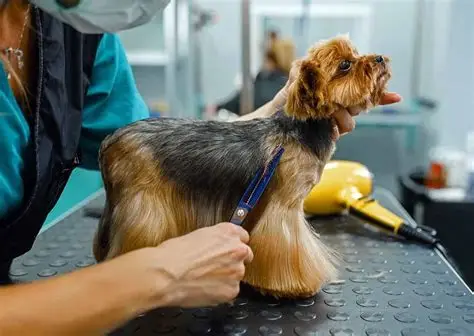
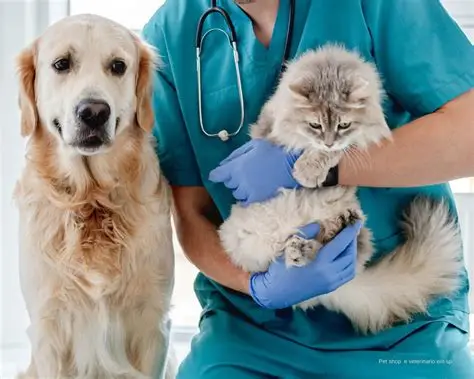

Banho e Tosa

Quando se trata do bem-estar e da higiene dos nossos pets, o banho e a tosa são serviços
indispensáveis. Além de promoverem a higiene dos nossos amigos de quatro patas, essas práticas
ajudam a prevenir problemas de saúde e melhoram a qualidade de vida dos animais. Mas, para garantir
que essa experiência seja positiva para todos, é importante conhecer a estrutura de banho e tosa e
garantir a segurança e o conforto do seu pet. Afinal, um banho e tosa bem feitos vão muito além de
um pelo cheiroso e macio; envolvem cuidados com a pele, prevenção de doenças e, claro, muito
carinho!
Preços entre R$35,00 e R$130,00
Consulta Veterinária

Avaliação completa da saúde do seu pet realizada por um médico veterinário qualificado, incluindo
diagnóstico, orientações de cuidados, prevenção de doenças e indicação de tratamentos quando
necessário.
Preços à partir de R$100,00